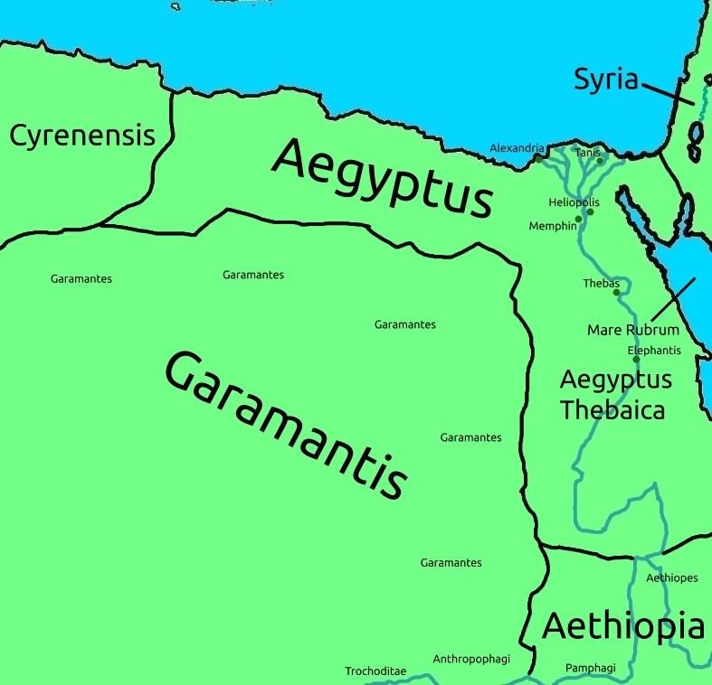

Aegyptus and Aethiopia
And so we enter Egypt! Remember, Egypt is sometimes, administratively, considered a part of Asia.
Egypt, which was previously called "Aeria", is named after Aegyptus, a brother of Danai, or, as this mythical king of Africa is known in English, Danaus. Aegyptus was also the grandson of Libya and Poseidon.
From the East, it borders the Red Sea, or , Mare Rubrum, going west to where it borders Africa, Libya, through it's easternmost province, Libya Cyrenensis, and the area of Garamantis in the south.